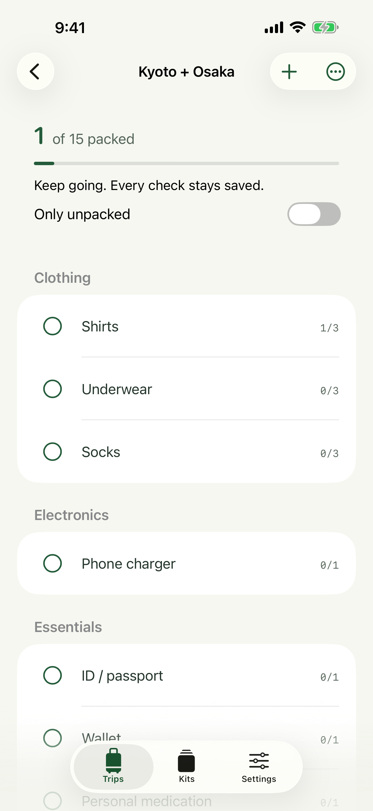
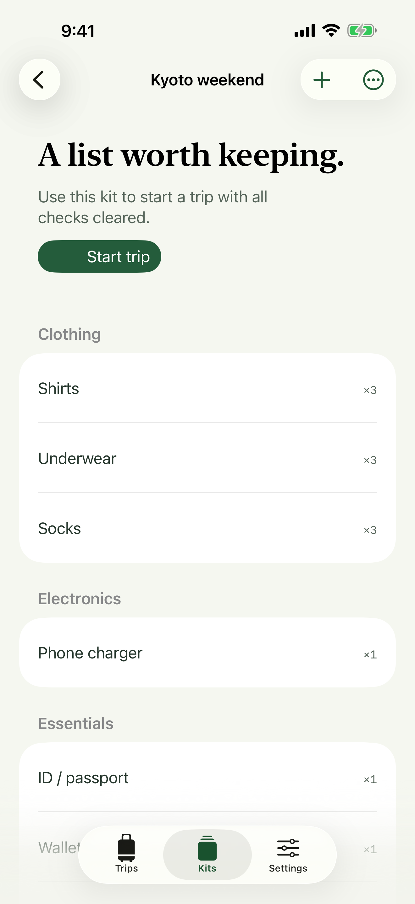
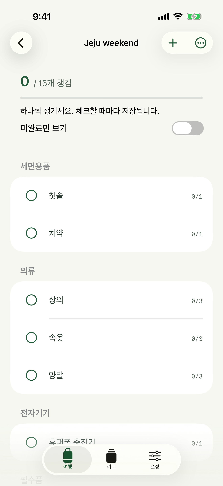

A good list travels with you.
Make a packing list without a connection. Reuse it for the next trip with fresh checks, and keep a backup you control.
iPhone · iOS 18 or later · English & 한국어
A free guide for your next weekend away.
Start with a simple packing list. Write the quantities you need, keep track of what is packed, and save a useful list for next time.
This free guide is separate from the paid Packstead app, now available in the US and South Korea. View Packstead in the US App Store.
A work trip starts the night before.
Separate what can go in your bag tonight from the charger, toothbrush, and other things you still need in the morning.

Know what is still missing.
Tap a circle when the full quantity is packed. Tap the item to edit its name, category, or partial packed count. One shirt packed out of three stays one out of three.
Search by item or category. Use List options to sort alphabetically. Long-press an item to move it within its category when manual ordering is active.

Start fresh. Keep your kit.
Open List options → Save as kit. Next time, open that kit and tap Start trip. Quantities stay, packing checks clear, and changes to the new trip leave the original untouched.
There is no city validation, weather request, registration, or automatic cloud sync. Core packing features work offline.
Help with your lists
Recover a deleted item
Open Settings → Recently Deleted. Restore the list or item you need. Deleted records do not expire automatically. Empty Recently Deleted only when you no longer need them.
Back up or move devices
Open Settings → Export backup and save the JSON file in Files. Transfer that file to the other device, then use Import backup. Import previews the number of trips and kits and asks before replacing current data. Export the current library first if you need to keep both.
After deleting the app
Uninstalling removes local app data. Keep an exported backup before uninstalling or changing devices. A previous local save helps with file corruption but cannot recover data after the app is removed. iOS device backups follow your system settings.
Editing is paused
If both saved copies cannot be read, Packstead preserves the files and pauses editing. Import a valid backup or contact support. A file from a newer app version requires an app update. Do not uninstall the app as a troubleshooting step without a backup.
Data and privacy
There are no accounts, analytics, advertising SDKs, or developer servers. Sharing, file export, and support email happen only when you choose them. Read the privacy policy for details.
사용 방법과 지원
여행 목록의 원을 누르면 해당 물건을 전부 챙김으로 표시합니다. 물건을 누르면 이름, 분류, 필요 수량과 챙긴 수량을 수정할 수 있습니다. 목록 메뉴에서 이름순 정렬, 새 목록으로 복사, 키트 저장을 선택하세요.

무료 주말 짐목록 가이드 보기 — 필요한 수량과 챙긴 수량을 종이에도 기록해 보세요.
이 무료 가이드와 유료 Packstead 앱은 별개입니다. 앱은 한국과 미국 App Store에서 이용할 수 있습니다. 한국 App Store에서 Packstead 보기.
키트에서 여행을 시작하면 체크가 비워진 독립된 목록을 만듭니다. 여행 목록을 수정해도 원본 키트는 바뀌지 않습니다. 목록 생성·편집·체크·복원은 인터넷 없이 작동합니다.
삭제한 항목은 설정 → 최근 삭제 항목에서 복원할 수 있습니다. 기기를 바꾸거나 앱을 삭제하기 전에 설정 → 백업 내보내기로 파일을 보관하세요. 백업 가져오기는 현재 전체 목록을 교체하므로 두 자료가 모두 필요하면 먼저 현재 자료를 내보내세요.
문제가 생기면 지원 이메일로 앱 버전, iOS 버전, 문제를 재현한 순서를 알려주세요. 비밀번호나 전체 개인 짐 목록을 보낼 필요는 없습니다.
Contact
Include the app version, iOS version, and steps that led to the issue. Avoid sending passwords or private packing lists unless you intentionally choose to share them.